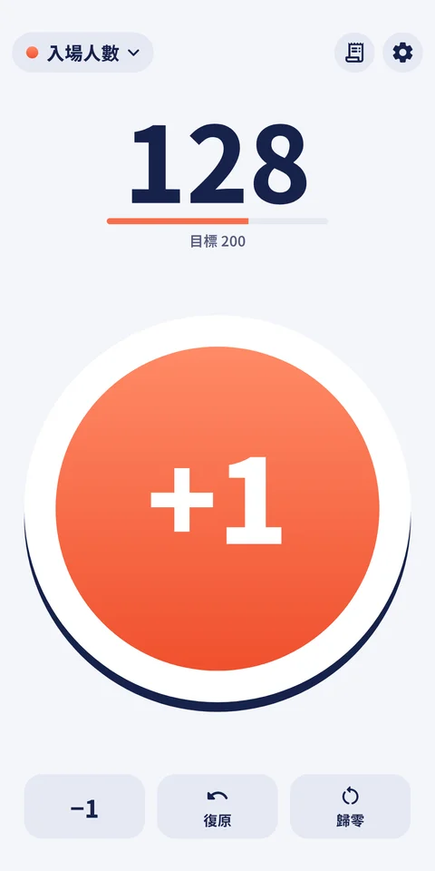
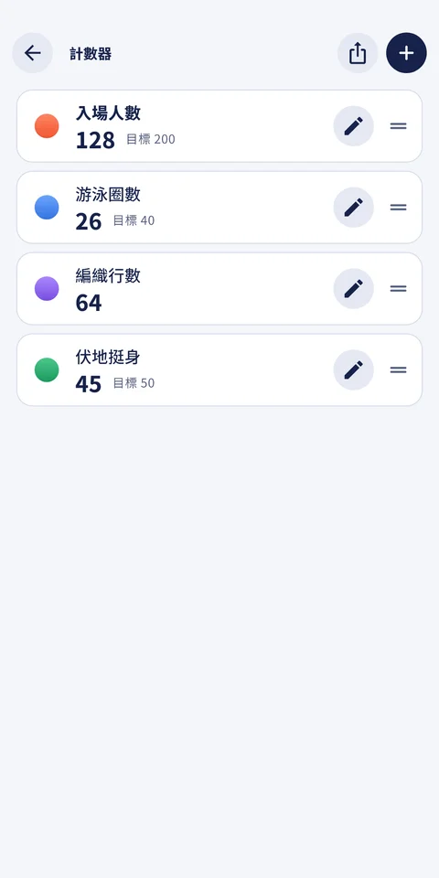
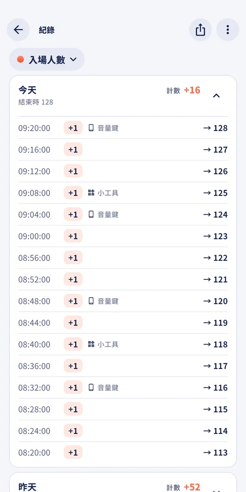
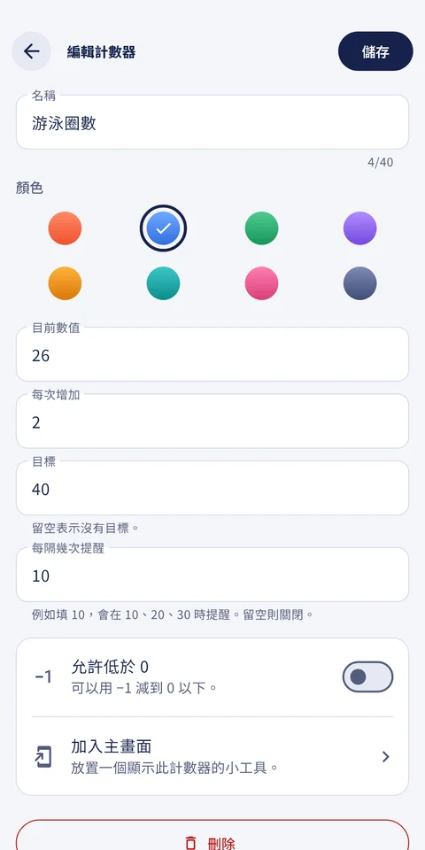
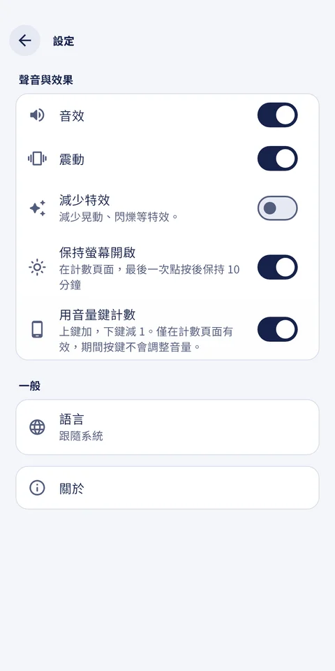
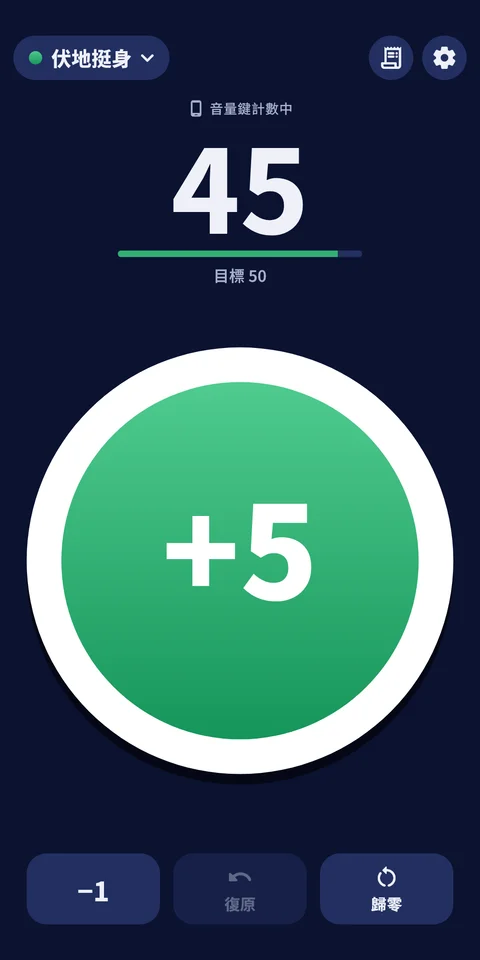
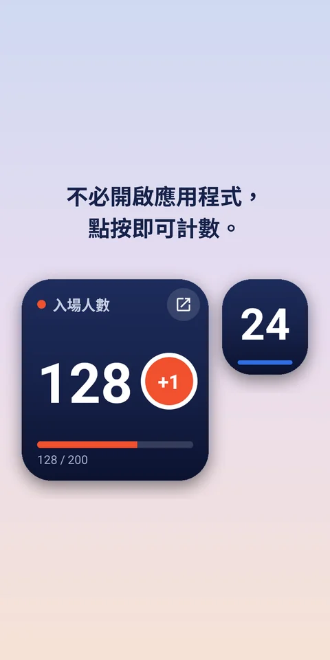

截圖







關於應用程式
| 應用程式名稱 | TapAlot |
|---|---|
| 版本 | 1.0.0 |
| 開發 | Willee Project |
| 支援平台 | Android |
每點按一下，數字就加一的計數器應用程式。統計入場人數、庫存、運動次數、編織的行數等，需要數「幾次」時都能用。
- 沒有註冊，也不用登入。你建立的計數器和紀錄都儲存在裝置裡。
- 沒有網路也能使用。 網路只用於螢幕下方的廣告，以及傳送使用統計和錯誤報告。
- 語言跟隨裝置設定。支援英文、韓文、日文、中文（簡體、繁體），也可以在設定裡自己選。
- 數值每次變化都會立刻儲存在裝置上（第9章）。
1. 開始使用
- 開啟應用程式，會直接進入上次使用的計數器的計數頁面。第一次開啟的是計數器 1。
- 點按頂部列裡的計數器名稱，進入計數器清單。新的計數器在那裡建立（第3章）。
- 頂部列除了計數器名稱，還有紀錄（第5、6章）和設定（第8章）按鈕。
2. 計數
計數頁面中央大大地顯示目前數值，下方是一個大的+1按鈕。按鈕下面是減 1、復原和歸零。
- +1 按鈕：手指一碰到就計數，不用等手指抬起，所以可以快速連點。只有圓形按鈕內會有反應，圓圈外點按不計數。
- 減 1：把數值減 1。預設不會減到 0 以下（第4章的允許低於 0）。
- 復原：取消最近一次變化（增加、減少、歸零、修改數值）。繼續點按，會依序復原更早的變化。
- 歸零：把數值歸零。會先跳出「要歸零嗎？」的確認視窗。目前數值會保留在紀錄中，可用復原恢復。
- 數值變化時，數字會彈一下。在設定中開啟減少特效，或在裝置的無障礙設定中關閉動畫，就不會彈。
- 按鈕和廣告之間的窄條，點按沒有反應。
3. 計數器清單
點按頂部列裡的計數器名稱即可開啟。計數器可以建立多個。
- 點按某個計數器，會開啟它的計數頁面。
- 點按上方的新增計數器來建立。
- 點按列尾的編輯計數器來修改（第4章）。
- 調整順序：拖曳列的把手，或長按某一列後拖曳。
- 刪除在編輯頁面裡。刪除後會短暫出現「已刪除：名稱」和復原。已刪除的計數器會在清單最下方的最近刪除中保留 7 天（「N 天後清除」），在那裡點按還原，就會連同紀錄一起回來。過了 7 天會連同紀錄一起清除。
- 只剩一個計數器時，沒有刪除按鈕。計數器始終至少有一個。
- 上方的全部匯出（CSV）按鈕會把所有計數器的紀錄做成檔案送出（第6章）。
4. 編輯計數器
| 項目 | 作用 |
|---|---|
| 名稱 | 計數器的名稱（最多 40 個字元）。留空時會顯示帶編號的名稱，如「計數器 1」 |
| 顏色 | 從 8 種顏色中選擇。用於計數頁面和小工具 |
| 起始數值 | 只在建立新計數器時有。第一個數值 |
| 目前數值 | 編輯既有計數器時顯示。修改數值後，紀錄中會留下「修改數值」，可用復原恢復 |
| 每次增加 | 點按一次+1 按鈕增加的數（1～9999）。預設是 1 |
| 目標 | 留空表示沒有目標（第5章） |
| 每隔幾次提醒 | 例如填 10，會在 10、20、30 時用聲音和震動提醒。留空則關閉。每次增加的數較大而跳過倍數時也會提醒。減少和歸零不會提醒 |
| 允許低於 0 | 開啟後，減 1可以減到 0 以下。預設關閉 |
- 點按儲存後修改才會生效。
- 加入主畫面：放置一個顯示此計數器的小工具（第7章）。
- 刪除：刪除此計數器（第3章）。
5. 目標與紀錄頁面
目標
- 設定目標後，目前數值下方會出現進度條和「目標 50」。
- 數值達到目標時，會變成「已達成目標」，並用聲音和震動提醒。聲音和震動依照設定（第8章）。
紀錄
點按頂部列的紀錄按鈕開啟。每次數值變化都會留下一行紀錄。
- 一開始顯示計數頁面中的計數器的紀錄。點按上方的計數器名稱按鈕，可以選擇其他計數器並檢視其紀錄。計數頁面的計數器不會改變。
- 紀錄依當時的本地日期分組。日期列會顯示計數（「計數 +16」，即當天增加的數減去減少的數，不含歸零和修改數值）、結束時（「結束時 120」，即當天最後的數值）以及歸零次數（「歸零 2 次」）。
- 點按日期展開，當天的紀錄由新到舊排列。每筆紀錄有時間、變化（增加、減少、歸零、修改數值）、增減和數值，用音量鍵或小工具計數的紀錄會帶有相應標記。某天紀錄特別多時，只顯示最近 500 筆（匯出檔案包含全部）。
- 紀錄超過 20 萬行後，會從最早的日期起只保留僅每日合計。這樣的日期展開後沒有紀錄行，末尾會顯示「較早的紀錄已合併為每日合計。」今天的紀錄不會被合併。
- 右上角選單裡的清除紀錄會刪除此計數器的全部紀錄。目前數值保持不變。
6. 匯出（CSV）
把紀錄做成 CSV 檔案匯出。點按按鈕後，選擇分享或儲存到裝置。
- 分享：交給裝置的分享面板。接收的應用程式（郵件、雲端儲存等）由你選擇。
- 儲存到裝置：在檔案儲存視窗中選擇資料夾和名稱，儲存到此裝置。儲存後會顯示「已儲存到裝置。」。
- 一個計數器：點按紀錄頁面右上角的匯出（CSV）按鈕。匯出的是紀錄頁面中正在檢視的計數器。
- 所有計數器：在計數器清單點按全部匯出（CSV）按鈕。
- 產生檔案時會顯示「正在產生 CSV 檔案…」。產生失敗時會提示「無法產生檔案，請再試一次。」
- 欄位有計數器、日期、時間、變化、增減、數值和來源。已合併為合計的日期會成為一行每日合計。
- 可以用試算表程式開啟。
- 檔案中包含計數器名稱和紀錄。不會傳送給開發者，但收到檔案的人可以讀到內容，傳送前請先確認。
7. 主畫面小工具
不用開啟應用程式，在主畫面上點按就能計數。
放置
- 在應用程式中：在計數器的編輯頁面點按加入主畫面，就會放置一個顯示該計數器的小工具。如果裝置不支援從應用程式中新增，會出現「新增小工具」的提示。應用程式會先開啟該計數器，請長按主畫面空白處，在「小工具」裡把 TapAlot 拖曳到主畫面上。
- 在主畫面上：長按空白處，從小工具清單中把 TapAlot 小工具拖曳到主畫面上。這樣放置的小工具顯示最後使用的計數器。
使用
- 點按小工具，不用開啟應用程式，數值就會增加「每次增加」的數，並短暫震動。震動依照應用程式中的震動設定。沒有聲音。
- 計數器有目標時，小工具上也會顯示進度。
- 點按右上角的小圖示（開啟應用程式）會開啟應用程式。
- 把小工具縮小後，只顯示數字。
- 在小工具上數的數，會在下次開啟應用程式或應用程式回到前景時加入紀錄，紀錄中標為「小工具」。點錯了，可以在應用程式裡用復原恢復。
- 刪除計數器後，它的小工具會顯示「點按開啟應用程式」，點按即可開啟應用程式。
8. 設定
點按計數頁面頂部列的設定按鈕開啟。分為兩組。
聲音與效果
| 項目 | 作用 |
|---|---|
| 音效 | 開啟或關閉點按和目標的聲音 |
| 震動 | 開啟或關閉點按和目標的震動。小工具的震動也依照此設定 |
| 減少特效 | 減少數字彈動之類的特效 |
| 保持螢幕開啟 | 在計數頁面不讓螢幕熄滅。最後一次點按後 10 分鐘解除。預設開啟 |
| 用音量鍵計數 | 開啟後，音量加鍵加數，音量減鍵減 1。僅在計數頁面有效，期間按鍵不會調整音量。螢幕熄滅時不會計數。預設關閉 |
用音量鍵計數的紀錄，會在紀錄中標為「音量鍵」。
一般
| 項目 | 作用 |
|---|---|
| 語言 | 選擇跟隨系統（預設），或從清單中選（English · 日本語 · 한국어 · 简体中文 · 繁體中文） |
| 隱私權選項 | 重新開啟廣告同意視窗。僅在需要同意的地區（如歐洲）顯示 |
| 關於 | 版本、本說明（使用說明）、在 Google Play 上評分、隱私權政策、開放原始碼授權、更多應用程式（點按會開啟商店）和查看全部應用程式 |
畫面顏色跟隨裝置的深色模式。應用程式內沒有單獨的開關。
9. 儲存、備份和廣告
- 儲存：每次數值變化都會立刻儲存到裝置。即使關閉或強制停止應用程式，數過的數也會保留。每天一次，會在自動備份不包含的位置保留一份儲存檔的副本，僅在檔案損壞時用於還原。
- 備份：如果開啟了 Google 備份（Android 自動備份），計數器、紀錄和設定也會一起備份，在更換裝置或重新安裝應用程式時還原。如不需要，可在 Android 設定的備份選單中關閉。解除安裝應用程式會刪除裝置上的資料。
- 廣告：螢幕最下方有一條橫幅廣告。這是唯一的廣告，計數頁面的大按鈕和橫幅之間留有空隙。鍵盤彈出時，廣告條會被隱藏。在需要同意的地區（如歐洲），首次開啟時會出現廣告同意視窗，之後可在設定的隱私權選項中變更。
- 沒有應用程式內購買，也不會向伺服器傳送任何內容。
- 詳情請見隱私權政策。